Tutoriais
Para criar a assinatura primeiramente você seleciona a empresa e o domínio:
Após isso coloque suas informações (Nome, Cargo, Email):

Neste momento, aparecerá no lado direito uma pré visualização de como ficará sua assinatura
Agora basta clicar em "Gerar HTML e PNG" ou "Copiar" e seguir os proximos tutoriais para enexar nos provedores de Email!
Para os seguintes provedores:
- Thunderbird
- Outlook
- Gmail
Siga os proximos tutorias, para outros provedores, entre em contado com o suporte!
Seguindo a partir do tutorial "Como criar assinatura"
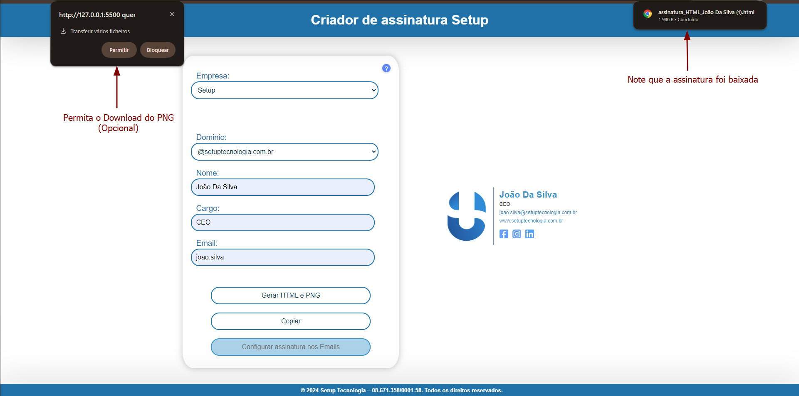
Agora com o Thunderbird aberto, vamos entrar no menu de configurações
Após entrar em configurações entre em "configurações de contas"
Note que caso você tenha permitido a trnsferência de multiplos arquivos (como mostrado na imagem 2) aparecerão 2 arquivos, selecione o arquivo HTML(O arquivo que não é uma imagem)
E pronto, agora ao começar a escrever um novo email, a assinatura já estará anexada!
Dentro do Outlook aperte no botão "Novo Email"
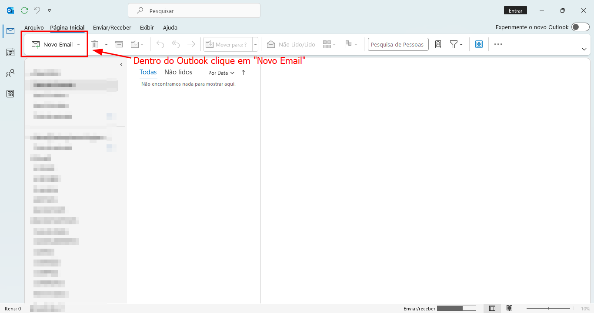
Após ter entrado em "Novo Email", clique em "Inserir"
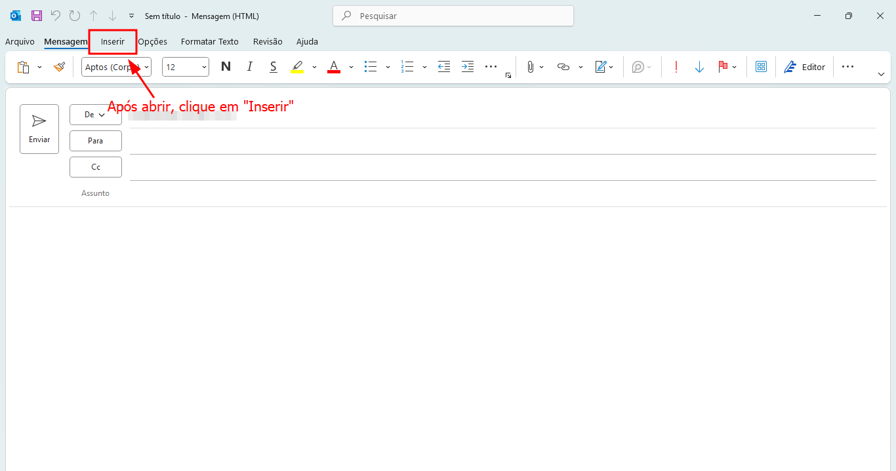
Dentro de "Inserir", clique na caixa de "Assinatura" e depois no campo "Assinaturas", para ter acesso às configurações
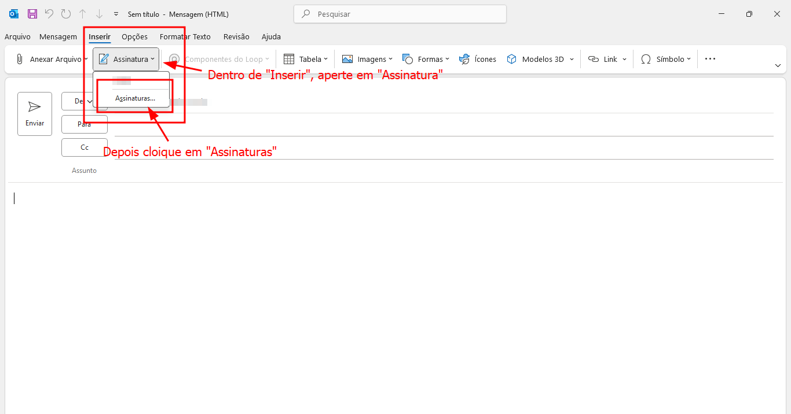
Com o campo de "Assinaturas" aberto, clique no campo de "Novo", para conseguir cadastrar
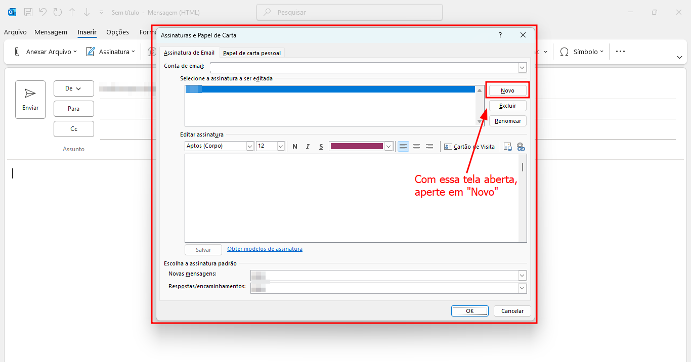
Adicione um nome para sua assinatura
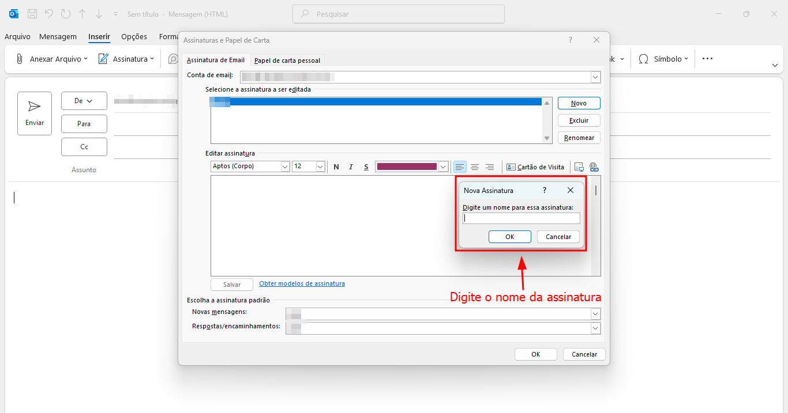
Volte para o Google Chrome ou seu navegador e digite CTRL + J, para abrir os Downloads e aperte no arquivo da assinatura
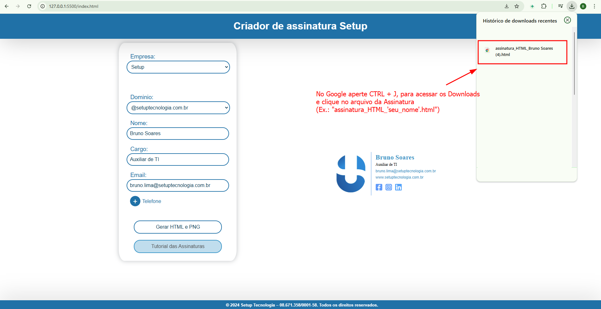
Após entrar no arquivo da assinatura, aperte primeiro CTRL + A, para selecionar tudo, e depois CTRL + C, para copiar todas informações. Por fim, volte para o Outlook
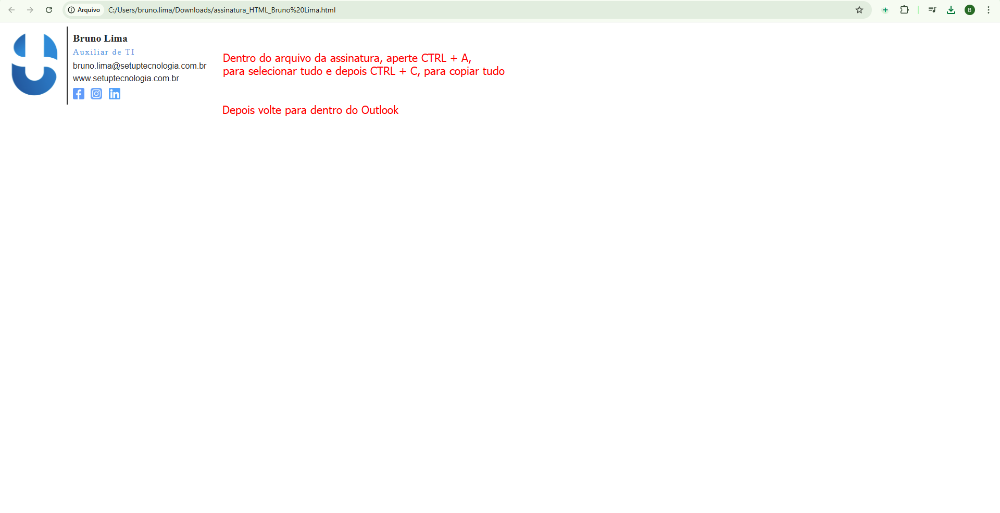
Dentro do campo de das assinaturas, aperte CTRL + V para colar a assinatura e "OK", para confirmar as configurações

Depois de confirmado, clique em "Assinatura", ainda dentro de "Inserir", e selecione o nome da assinatura que havia dado anteriormente
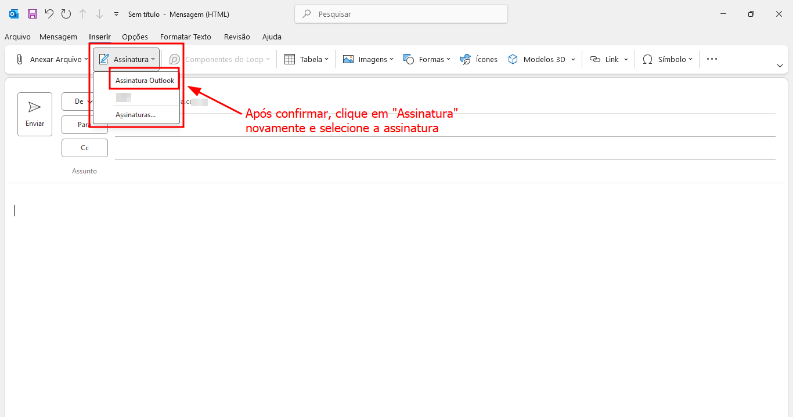
Para colocar sua assinatura, primeiramente acesse seu Gmail. Toque na engrenagem, em "Configurações"
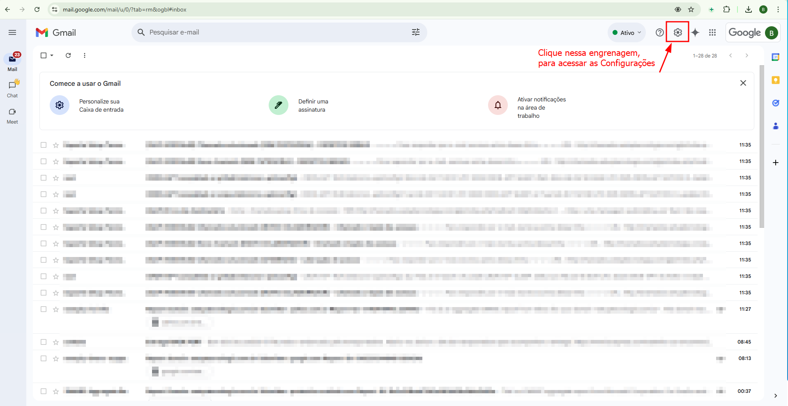
Após as configurações abrirem, aperte em "Mostrar todas as configurações", para ter acesso a outras opções
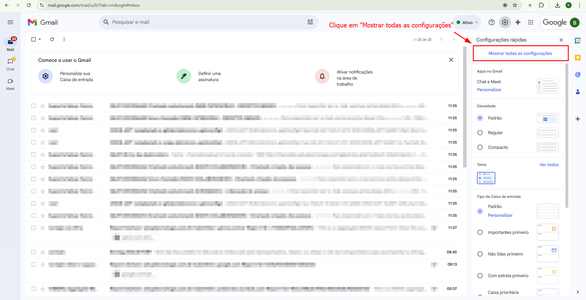
Desça até o campo chamado "Assinatura" e aperte em "Criar Novo", para conseguir criar uma nova assinatura
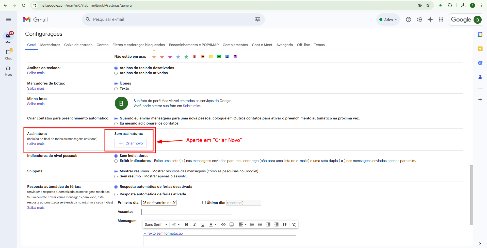
Com o campo "Criar Assinatura" aberto, coloque um nome para que possa ser associado com a sua assinatura
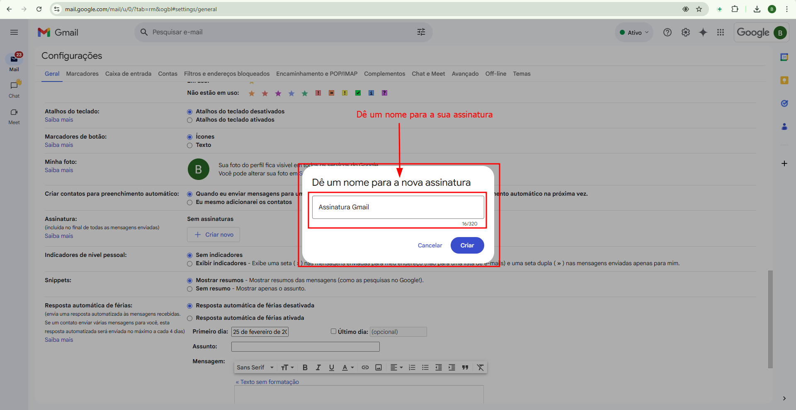
Após escolhido qual nome quer dar para a assinatura, clique nessa moldura para poder localizar dentro do PC o documento da assinatura
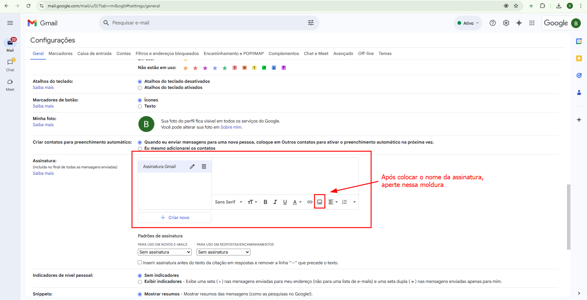
Clicado no botão, abrirá essa janela. Toque em "Fazer Upload", para encontrar a assinatura e depois arraste o arquivo da assinatura até esse campo
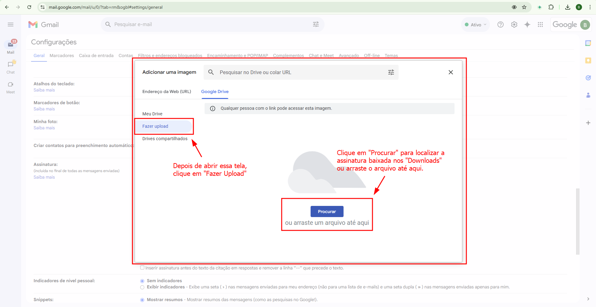
Para escolher o arquivo dentro da máquina. Clique no arquivo (Ex.: "assinatura_PNG_'seu_nome'") e "Abrir"
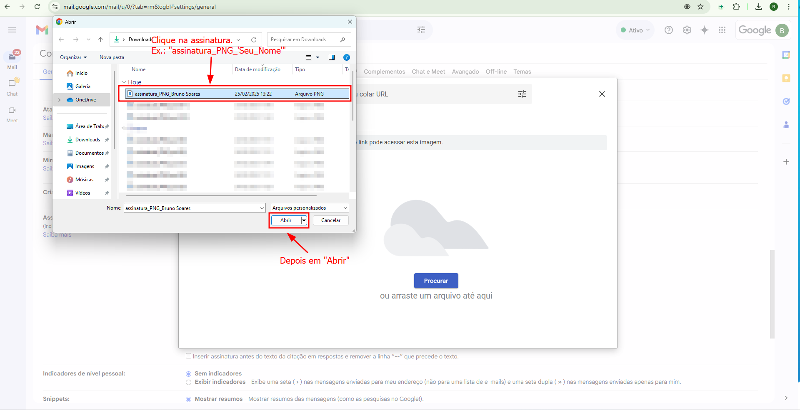
Após aberto o arquivo, você conseguirá ve-lo

Com a assinatura já salva com um nome dentro do Gmail. Acesse os campos indicados na imagem e selecione o nome da assinatura que nomeou anteriormente e marque na caixa também indicada na imagem
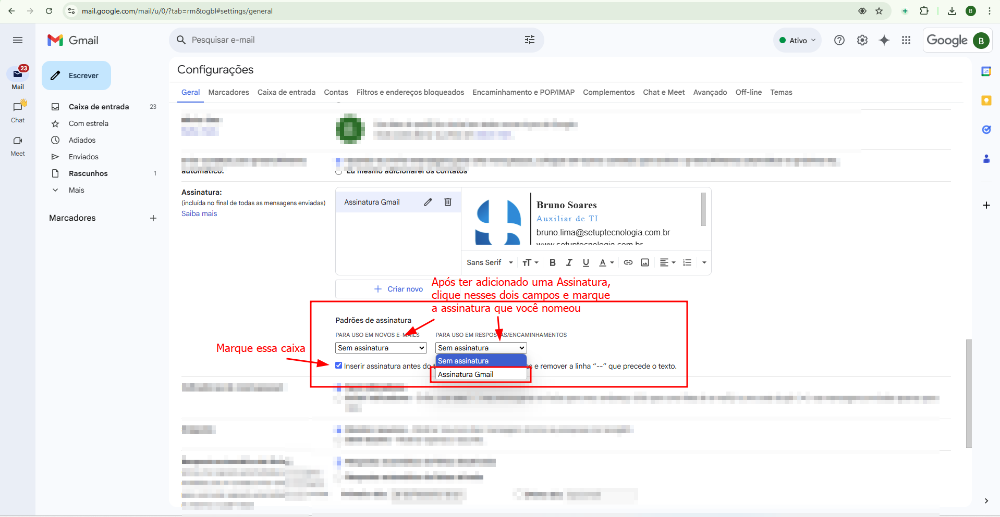
Com as etapas anteriores feitas, desça até o final da página e clique em "Salvar alterações", para guardar as configurações feitas
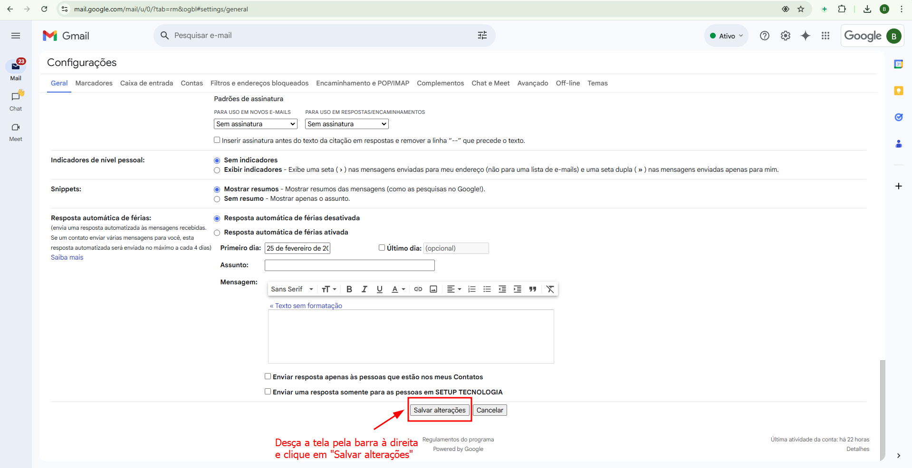
Com as configurações salvas, ao apertar em "Escrever", a assinatura já aparecerá no seu campo de escrita
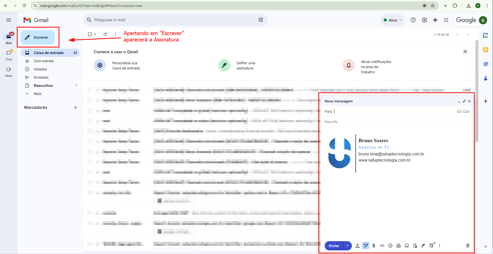